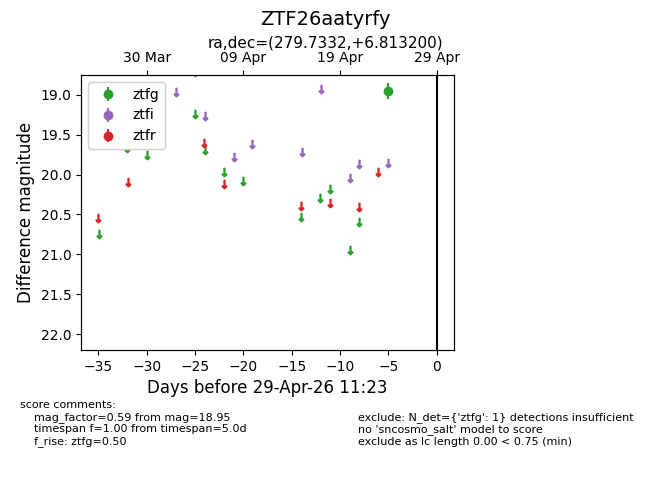
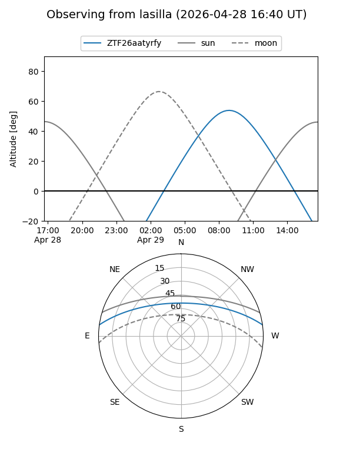
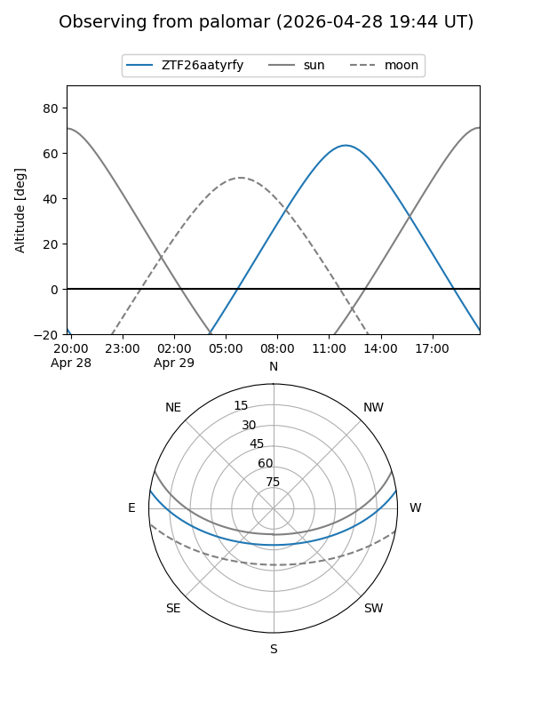

ZTF26aatyrfy
Target ZTF26aatyrfy at 2026-04-29 11:26
Aliases and brokers:
FINK: link
Lasair: link
ALeRCE: link
alt names
ZTF26aatyrfy (ztf,fink_ztf)
Coordinates:
equatorial (ra, dec) = 279.7332,+6.81320
equatorial (HMS+DMS) = 18:38:55.98,+06:48:47.52
galactic (l, b) = (37.5962,+5.87096)
Flags:
Photometry:
last ztfg=18.95
1 ztfg detections
Lightcurve

Visibility


Additional plots